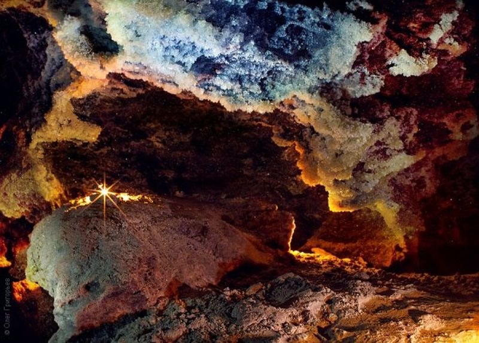

Optymistychna Cave
is a gypsum cave located near the Ukrainian village of Korolivka, Borshchiv Raion, Ternopil Oblast.
Approximately 265 km of passageways have been mapped within. As a result, it is the longest cave in Eurasia and the fifth-longest cave
in the world, after Mammoth Cave, Sistema Sac Actun, Jewel Cave and Sistema Ox Bel Ha. It is also the longest gypsum cave in the world.

ABOUT
World longest gypsum cave
Variety of exclusive tours
3-18 km by foot per one route
Over 50 years of cave exploration
5 languages (Ukrainian, Russian, Polish, English, France)
EXCURSIONS
Economy
Standart
Short and easy introducing excursions from 2 to 4 hours long.
You will see all beauties of underground world.
The most popular routs of middle difficulty lasting up to 8 hours.
Extreme
Personal
For strong and tough. The longest and the most difficult routs.
Spend more than 10 hours under the ground.
Developing the individual excursion plan. Can include different cave routs and regions.
You can spent few days in the cave with sleeping in a basecamp.